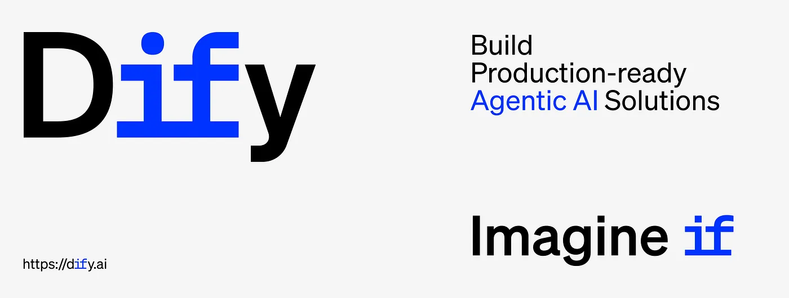
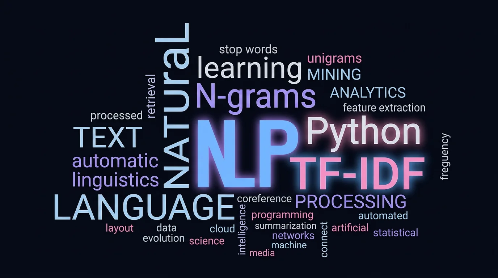

SonarQube Locally with Docker
Static analysis with Docker Compose: local dashboard, project setup, and analysis workflow.
Senior Software Engineer
I just don’t write code. I build solutions that scale.
Specializing in distributed systems, real-time architecture, and high-performance applications.
➜ whoami
Senior software engineer. Spent the last 5+ years working on systems that handle real load — transcription pipelines, CRM integrations, Kafka-backed ingestion, and AI in production. I write Python, Go, and Java, care about observability, and try to leave things in a state where the next person isn't confused.
➜ cat skills.json
➜ ./status.sh
[OK] Ready to architect solutions beyond boundaries.
_
Loading contributions...
Static analysis with Docker Compose: local dashboard, project setup, and analysis workflow.

Self-host Dify, configure models, and build your first LLM workflow from scratch.

NLP baseline: implementing monogram, bi-gram, and tri-gram TF-IDF for text analysis.
"Saurabh is a dependable and detail-oriented engineer who takes ownership and see things through to completion - a pleasure to work with!"
"Saurabh is an exceptional coder and a natural leader. He is well-versed in various programming languages and frameworks, with strong expertise in system design and architectural implementation. His commitment to best coding practices ensures his work is efficient, maintainable, and scalable. Beyond his technical skills, Saurabh’s humility and collaborative spirit make him a pleasure to work with. I highly recommend Saurabh for any team seeking a skilled developer and effective leader."
"I had the pleasure of working with Saurabh as his manager and can attest to their coding and technical skills. Saurabh is highly skilled in Python, Java, and Go and has consistently developed high-quality, scalable software solutions for our team."